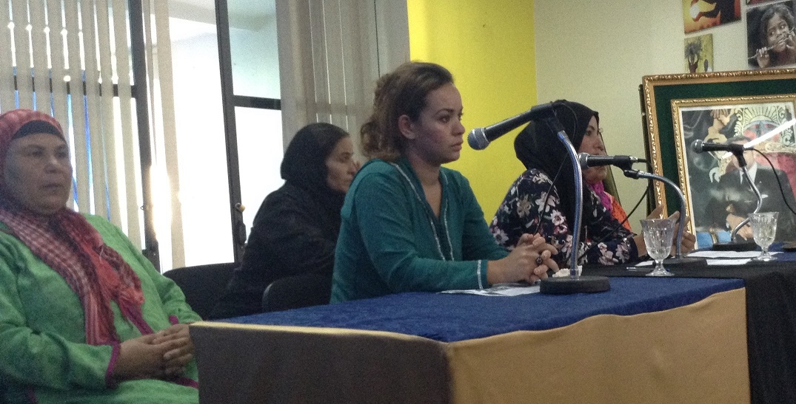

Groupes d'entraide et de veille communautaires
Pourquoi mettre en œuvre ce projet?
- L’association IPDF a réalisé un rapport sur la base de l’analyse des déclarations des jeunes femmes victimes de violence usagères de son « centre Batha pour l’autonomisation des femmes ».cette analyse qui a couvert 15 quartiers précaires de la ville de Fès a révélé, entre autres, un lien entre la zone d’habitation de ces femmes et leur capacité d’aller au bout de leur démarches juridiques ou d’insertion économique. Le rapport a mis en lumière l’impact du territoire, de l’agencement de ses services, de ses voiries et ses transports sur le processus d’autonomisation individuelle et collective des femmes, leur accès à l’éducation, aux ressources, à la santé sexuelle et reproductive….
- Les groupes d'entraide peuvent aider à impliquer les femmes dans les questions liées à leurs quartiers en leur offrant un espace pour exprimer leurs préoccupations et idées. Cela peut encourager leur participation active dans les discussions sur la planification urbaine et la gestion de leur environnement.
- En tant qu’usagère du quartier et de ses ressources, les femmes ont développé une « expertise de citoyenne » qui peut être utile dans la conception des politiques locales. Elles ont souvent une connaissance approfondie de leurs quartiers, ses problèmes, et ses besoins. Elles sont également plus sensibles à certains enjeux tels que la sécurité, les espaces verts, les transports en commun, l’accès aux services, etc. Valoriser cette expertise et en tirer parti pourrait permettre aux politiques locales d’être mieux adaptées aux besoins des habitantes, plus innovantes, plus inclusives, et plus efficace. Cela peut contribuer à rendre nos quartiers plus agréables à vivre, plus sûrs, plus abordables, et plus résilients.
En quoi consiste ce projet?
Le projet permettra aux femmes de quartiers sensibles de la ville de Fès de devenir des leaders et des citoyennes actives et engagées dans leur communauté, et de créer des groupes d’entraide et de veille communautaire.
Les activités du projet contribueront à l'autonomisation/empowerment de ces femmes au niveau individuel et collectif en leur fournissant des ressources et des outils pour développer leur rôle dans la communauté. Et ce via :
- des stratégies d’information (droits à la santé sexuelle et reproductive, droits des femmes, etc.),
- des stratégies de formation/capacitation (renforcement de capacité en leadership, en communication, en plaidoyer, et en mobilisation communautaire).
- des stratégies de réseautage et mise en place de groupes d’entraide (identification d’objectifs commun, accompagnement à la conception de plans d’action et initiatives locales collectives visant à promouvoir l'égalité des genres dans leurs quartiers et dans la ville de Fès ).
Quels sont les partenaires?
- acteurs des politiques territoriales: commune urbaine de Fès;
- acteurs de la protection des droits humains: la Commission Régionale des Droits de l’Homme, l’Association Forum Oulfa pour le Développement de la famille, l’Association Saiss de Développement et de Solidarité, Le Centre Multidisciplinaire Al Amal pour l’autonomisation des femmes, Le Centre Multidisciplinaire de Zouagha pour l’Insertion des Femmes, L’Association Marocaine de Planification Familiale, L’Association perspectives roses pour les développements durables, le Centre Multifonctionnel Batha pour l’Autonomisation des Femmes.
Activités du projet
Soutenez le programme
Nous avons besoin de votre soutien pour continuer notre travail. Votre don nous aidera à poursuivre nos actions en faveur de l'égalité des genres et de l'autonomisation des femmes.
Résultats prévues du projet
- Au moins 12 groupes d'entraide et de veille communautaire auront été créés par les habitantes des quartiers précaires de Fès au cours des 3 prochaines années.
- Les groupes d’entraide d’habitantes auront conçus des projets collectifs, grâce à l’accompagnement prévus dans le cadre du projet.
- Les groupes d’entraide auront contribué à la promotion de l'égalité des sexes et de la lutte contre les discriminations, grâce à des campagnes de sensibilisation menées par les femmes dans 12 quartiers de la ville de Fès.
- Les groupes auront permis de renforcer les liens entre les habitantes des quartiers précaires et les autres acteurs locaux, favorisant ainsi la participation des femmes à la vie sociale et politique de la ville.

Forum de l’emploi au féminin
Il s’agit d’une réponse pratique aux difficultés d’accès des femmes au marché de l’emploi. Ce rendez-vous de l’égalité professionnelle s’emploie à ... lire la suite

Création de groupes d'entraide et de veille communautaire
Des femmes victimes de violences, usagères du centre multifonctionnel Batha pour l’autonomisation des femmes (géré par notre association IPDF), ont été accompagnées dans la création d’un groupe d’entraide et de veille communautaire nommé « nous sommes devenues militantes »... lire la suite

réalisation de diagnostics urbains participatifs
La balade exploratoire organisée dans les quartiers de Louisates et Sahrij Gnaoua nous a permis de recueillir le vécu et le ressenti des habitantes en lien avec ... lire la suite

Création du réseau « TITRIT »
Ce collectif, coordonné par l’association IPDF, est composé de 24 associations locales qui interviennent directement auprès des femmes victimes de violences ou de pauvreté, et qui ... lire la suite

Séminaire nationale "entreprises, droits humains, et approche genre"
Il a permis de fournir des éléments de réflexion sur la problématique générale de l’emploi féminin dans sa relation à la fois avec le développement et avec les droits des femmes. Grâce aux estimables contributions... lire la suite